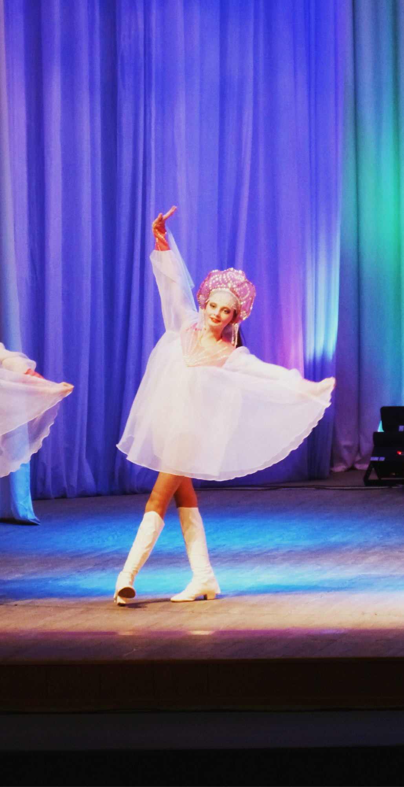

С детства я занимаюсь танцами.Танец для меня - это новое дыхание. Когда кажется, что жизнь застряла на одной точке, я нахожу только один выход - танцевать. Благодаря им я забываю обо всём. В жизни каждого человека должно быть занятие, которое спасает его от повседневной рутины и дает ему шанс выплеснуть энергию, самореализовать себя. Для меня танец и есть такое занятие, которое позволяет мне чувствовать себя там, где я и должна быть.
Также я очень люблю читать. Мне нравятся абсолютно любые жанры: начиная от любовных романов заканчивая художественной литературой. Вот мой топ список:
- "Солёный ветер"-Сара Джио (любовный роман).
- "Внутри убийцы"-Майк Омер (триллер).
- "Маленькие женшины"- Луиза Мэй Олкотт (роман).